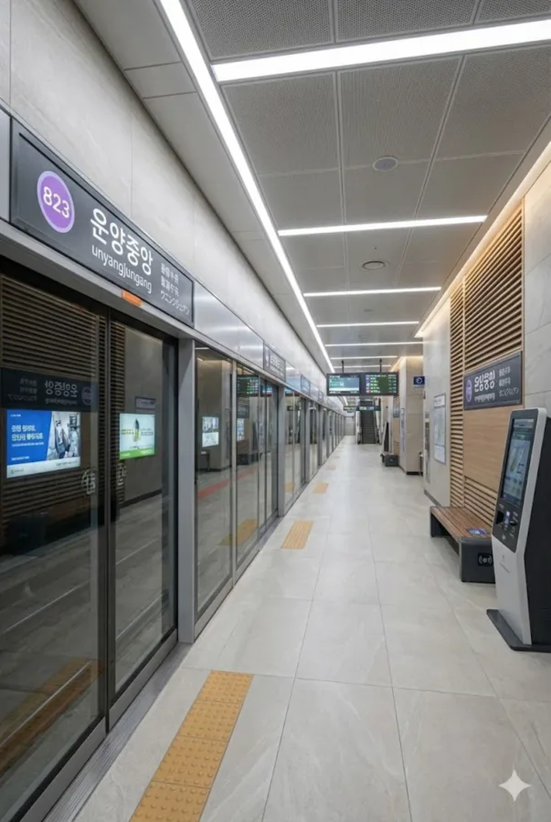

효빈 도시철도 8호선 816번. 효빈광역시 남구 운양동 소재. 8호선의 개통으로 남구의 악명 높은 교통체증 속에서 주민들을 구원해낸 역 중 하나다.
구름(雲)과 볕(陽)이 어우러진 운양동의 정중앙에 위치하고 있다. 주변은 전형적인 저층 주거단지로 구성되어 있어 조용하지만, 특정 팬층 덕분에 주말마다 묘한 활기를 띤다.

| ↑ 평운 | |||
| 하 | ㅣ | ㅣ | 상 |
| ↓ 운촌 | |||
남구 교통의 핵심을 담당하는 간선 노선들과 운양동 구석구석을 잇는 지선 노선들이 역 바로 앞 정류장에 떡하니 정차한다. 8호선 고가 경전철과 유기적으로 환승이 가능해 운양중앙역 일대 주민들의 핵심 교통망 역할을 톡톡히 수행하고 있다. 이렇게 노선이 미어터지는데 버스가 없다고 쓴 전임 편집자는 안과부터 가봐야 한다.
| 구분 | 정류소명 | 경유 노선 |
|---|---|---|
| 간선버스 | 운양중앙역 | 79, 89 |
| 지선버스 | 운양중앙역 | 391, 792, 892 |
운양중앙역은 인근 주거단지 수요가 탄탄하며, 출퇴근 시간에 8호선 이용객들이 집중적으로 몰리는 핵심 정차역 중 하나이다.
| 운양중앙역 이용객 통계 | ||
|---|---|---|
| 연도 | 일평균 이용객 | 비고 |
| 2024년 | 6,571명 | 8호선 개통 원년 |